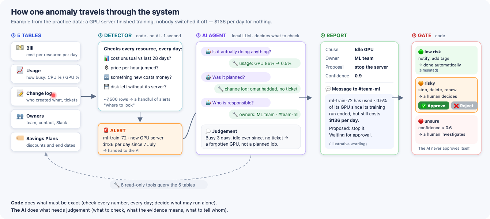

An AI assistant that watches a company's daily cloud bill, finds unexpected costs, works out why they happened and which team is responsible, and prepares the fix for a human to approve. Built and evaluated following CRISP-DM. Full working log with every decision: CRISP_DM.md · how to run: README.
Problem. Cloud-cost anomalies (an idle GPU at ~$136/day, an expired discount, a forgotten disk) are often noticed only on the monthly invoice, and investigating them is manual. AI tools for this exist — AWS Cost Anomaly Detection + Amazon Q and the AWS FinOps Agent (Jun 2026, report only), Finout Agents (Jun 2026, detect → investigate → fix with approval) — but none publishes how accurate it is, and lack of trust in automated outputs was the most-cited barrier in a July 2026 study of 28 FinOps practitioners. Our angle: build such an assistant and measure how far it can be trusted.
Requirements chosen for the scope
| The system must… | Checked by |
|---|---|
| find anomalies in a daily FOCUS-format bill | detector catch rate, false alarms |
| explain each one: cause, responsible team, fix | agent accuracy vs answer key |
| never take a risky action without a human | risky actions without approval = 0 |
| ignore planned, approved cost increases | decoys dismissed |
| take every number from the data, not from the AI | tools compute numbers; AI quotes them |
| be free and run on a laptop; give the same answer twice | local model, fixed seed, reproducibility check |
Out of scope: real changes to AWS (all actions simulated), optimising the whole account, non-FOCUS formats. Runs on: Mac with Apple Silicon, 16 GB RAM, ~5 GB disk, Ollama + Python; $0, no API key.
No public dataset has months of one company's bill with labelled anomalies, so we built a realistic company from real ingredients:
| Source | Gave us |
|---|---|
| FOCUS Sample Data (FinOps Foundation, Sep 2024 bill, CC BY 4.0) | 21 real prices; the real spending mix (CPU servers 63.7%, GPU 23.0%, disks 4.8%, data transfer 3.0% …) |
| Azure VM trace 2019 (Microsoft, 2.7 M servers) | how busy normal servers are (median ~6% CPU) |
| 3 GPU-cluster papers (ATC'23, NSDI'24, OSDI'26) | how busy normal AI-serving GPUs are: 25% / 20% / 6% |
DemoShop — online shop with an AI recommendation engine: 6 teams, 8 AWS accounts, 38 resources, Mar–Aug 2026.
amount = real share × total ÷ real price; rounding to whole servers gives 64.2% CPU instead of 63.7%.quantity = base × weekday pattern × growth × noise, cost = quantity × real price.
| Component | Purpose | Input → output | Model / tool calls |
|---|---|---|---|
| ① Detector | find suspicious resources | 5 tables → alerts | none — statistics |
| ② Agent | investigate one alert | alert + tools → incident form | local LLM (qwen2.5-coder 7B) + 8 read-only tools |
| ③ Action gate | keep risky actions under human control | form → status | none — plain code |
Detector — per resource, per day: normal = median of last 28 days, spread = 1.4826 × median distance from
normal, alert if (today − normal) / spread > 3 for 2 days and the extra cost ≥ $0.50/day (Z, K, $min tuned on
practice data). Extra rules: price per unit +5% (expired discount), new resource, disk whose server was deleted.
Agent — for each alert it decides which tool to call (resource info, cost history, usage, change log, owner, Savings Plans, attached server, free read-only SQL), reads the result, repeats, then fills a fixed form: type · owner team · action · confidence · explanation · evidence · message to the owner. Its instructions: data dictionary + FinOps playbook. It never sees the answers and never acts itself.
Gate — confidence < 0.6 or type "other" → human; stop / delete / renew → waits for Approve; notify / tag → automatic (simulated).
Example (expired Savings Plan): detector: web servers' price $0.238 → $0.340/h on 1 July, hours unchanged →
agent: price +42.9%, plan ended 1 July, managed by platform, no ticket → form: sp_expired, platform,
recommend_sp_renewal → gate: waits for approval.
Model choice (20 SQL questions on practice data; correct = same rows as the reference query):
| Model (maker) | Schema only | + data dictionary | Seconds |
|---|---|---|---|
| qwen2.5-coder 7B (Alibaba) | 40% | 80% | 2.2 |
| qwen3 8B (Alibaba), thinking | 75% | 80% | 21.1 |
| llama3.1 8B (Meta) | 40% | 70% | 2.5 |
Describing each column in one line doubled accuracy; step-by-step reasoning didn't help. Chosen: qwen2.5-coder (best and fastest).
Agent versions (practice data, same detector): v1 free choice of tools → 67% fully right; v2 code-forced checklist → 33% (more evidence confused the small model); v3 free choice + tools that state changes plainly ("GPU 86% → 0.5%") + resource kind in the alert → best on average (64%), frozen. Seed fixed so the same alert gives the same answer.
| (19 anomalies + ~10 decoys per difficulty) | Easy | Medium | Hard |
|---|---|---|---|
| Did it find the anomaly? | 18 / 19 | 18 / 19 | 12 / 19 |
| Did it fully understand it? (right cause + team + fix) | 14 / 19 | 12 / 19 | 11 / 19 |
| Did it leave harmless changes alone? | 13 / 18 | 14 / 18 | 13 / 18 |
| Risky actions without a human | 0 | 0 | 0 |
| Agent "real problem or not?": precision / recall / F1 | 0.79 / 0.86 / 0.83 | 0.83 / 0.91 / 0.87 | 0.74 / 0.88 / 0.80 |
Why the scores aren't higher
Trust conclusion. With a free local 7B model the assistant is reliable enough to find, explain and route anomalies and to run low-risk actions alone. Risky actions must stay behind human approval.
Integrity: detector, model and agent were developed on practice data only (checked by code before the final run); results carry a SHA-256 fingerprint of the frozen code; re-running investigations reproduced them exactly (3/3).
Not yet evaluated / next steps: quality of the written explanations (LLM judge calibrated on hand labels); the "just ask the LLM, no detector" baseline; a larger model; fixed command templates for real execution.
| Phase | What happened |
|---|---|
| Business understanding | problem, market scan, requirements, metrics |
| Data understanding | FOCUS sample + Azure trace + GPU papers; gaps found |
| Data preparation | calibrated synthetic company, 5 tables, 15 labelled datasets, validation |
| Modeling | detector (tuned), model benchmark (2 rounds), agent v1 → v3, gate |
| Evaluation | per-component metrics on practice data, final exam once |
| Deployment | Streamlit app (presentation + live demo with trace and Approve/Reject), README |
Built with Claude Code, steered by files rather than chat alone: CLAUDE.md (rules loaded every session:
CRISP-DM order, stop for approval, every number needs a source, the agent never sees answers), two skills
(add-data-step, evaluate-component), automatic leak tests, and this log as the single source of truth.
Each rule came from a real mistake (e.g. guessed traffic amounts were 4× off → "every number needs a source").